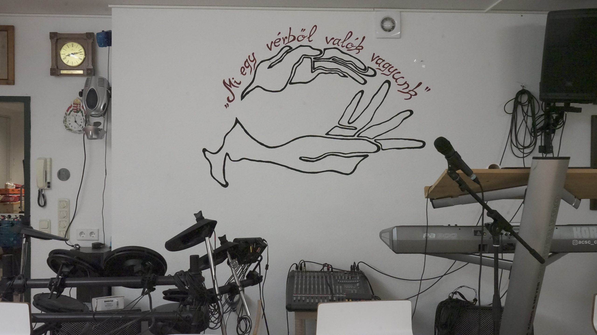
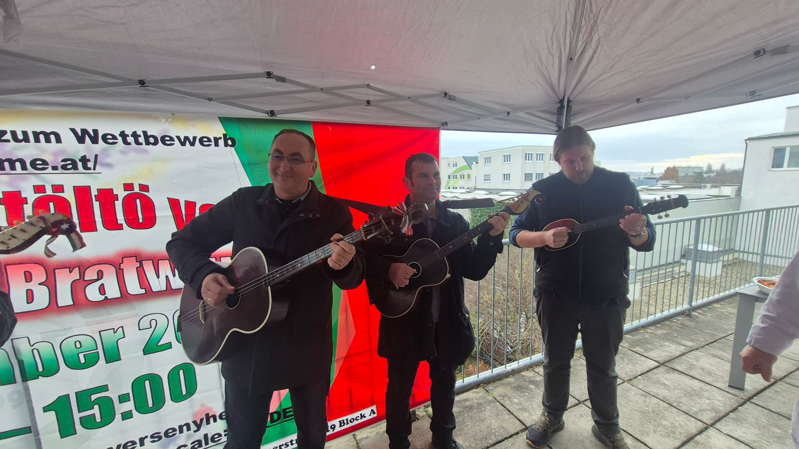

Bécsi Magyar Munkás Egyesület (BMME)
Üdvözöljük a Bécsi Magyar Munkás Egyesület (BMME) honlapján! Ausztria egyik legrégebbi magyar egyesületeként 1899 óta szolgáljuk a bécsi magyar közösséget. 2019-ben ünnepeltük 120. évfordulónkat, és azóta is hűek maradtunk küldetésünkhöz: a magyar nyelv, kultúra és hagyományok ápolásához.

Következő esemény: Magyar kolbászkészítő verseny

Jelentkezési lap / Anmeldeformular
Helyszín: Hirschstettnerstraße 19, Block A, Bécs
Gyülekező: 07:00–08:00 | Kezdés: 08:00
Elkészítési idő vége: 13:00 | Eredményhirdetés: 14:00–15:00
Nevezési díj: 30 € / csapat
A nevezési díj tartalmazza: Sörpad garnitúra, 3 × 3 méteres pavilon, sütőhely.
Amit a csapat hoz: hús, fűszerek, kolbásztöltő és a kolbász elkészítéséhez szükséges eszközök.
📦 Jelentkezési lap letöltése (PDF)FIGYELEM – KÜLÖN JELENTKEZÉS SZÜKSÉGES!
A kolbászkészítő versenyre való jelentkezés nem érvényes automatikusan az esti rendezvényre. Több információ az esti disznótoros vacsorához: https://www.facebook.com/VereinBMME
Galéria
Nézze meg a kolbásztöltő versenyről készült képeinket – húzza oldalra a(swipe) vagy használja a nyilakat!
Videók
Archívum
Fedezze fel korábbi rendezvényeink archív anyagait és emlékeit! Itt találja helyét minden múltbéli eseményünknek.
Üdvözlünk a BÉCSI MAGYAR MUNKÁS EGYESÜLET (BMME) Honlapján!
Az 1899-ben alakult egyesületünk és az egyik legidősebb magyar egyesületként szolgálja a bécsi magyarok közösségét Ausztriában.
Hűen követjük küldetésünket miszerint
- ápoljuk hagyományainkat nyelvünk, zenénk, szokásainkon keresztül.
- valamint, igyekszünk mindezeket az értékeket bemutatni sokszínű nemzeti környezetünknek, Bécsnek.
Gyere el hozzánk, hogy mindezeket az értékeket közösen védjük, ápoljuk és adjuk át az új nemzedéknek!
RÓLUNK
Az alapítók a 21. Kerületi Floridsdorfi mozdonygyár munkásai voltak. Lelkesedésükkel gyorsan maguk köré gyűjtötték a magyar érzelmű embereket. Az elmúlt 126 év alatt sokat változott a társadalom, új kihívások elé állította egyesületünket is, lelkesedésünk azonban töretlen!
Az utóbbi néhány évben új szerkezeti, szervezeti formával, de gyökereink szilárd megtartásával, kultúrális értékeink megőrzésével igyekszünk helyt állni rohanó felületes világunkban!
A BMME több mint egy egyesület! Ez egy valódi közösség, ahol a magyar hagyomány értékeinek megőrzésén túl, barátságok, családpótló kapcsolódások jönnek létre!
Székházunkban (1220-Hirschstettner Straße 19 Block A 3. emelet) havi rendszerességgel vannak találkozók!
A tematikus estek mint karácsonyi ünnep, anyák-, nők napja, operett gála, disznótoros est mellett zenés, táncos mulatságokat is tartunk amit nagy érdeklődés fogad. 2010 óta rendszeresen minden évben megszervezzük egyesületünknek kétségkívül a legkedvesebb és legnagyobb rendezvényét a „Gulyásfesztivál"-t! A fesztivál lényege és célja a hagyományos magyar marhapörkölt illetve magyar konyha megismertetése a fiatal nemzedékkel, valamint más nemzetek gasztronómiai kultúrájával.
Itt a Magyarházban otthonra lelhet minden dolgozó ember, aki kikapcsolódásra vágyik, és meg szeretné élni a magyar virtust. Kapcsolódj hozzánk te is!
Gulyásfesztivál - 2024
Az idei Gulyásfesztiválon részt vettünk a Donauparkban, ahol bemutattuk a hagyományos magyar gulyást és gasztronómiai kultúránkat. A rendezvényen több száz vendég vett részt, és sokan érdeklődtek a BMME tevékenysége iránt.
Évfordulós Ünnepség - 2019
120 éves jubileumi ünnepségünkön több száz vendéget láttunk vendégül, ahol bemutattuk az egyesület történetét és jövőbe mutató terveinket. A rendezvényen részt vettek különböző magyar együttesek és előadók is.
Kolbász Töltő Verseny
Meghitt estéken szoktuk megrendezni a kolbász töltő versenyt, ahol a résztvevők hagyományos módszerekkel töltik meg a kolbászburokot. Az esemény mindig nagy érdeklődést élvez, és remek lehetőség a közösségépítésre.